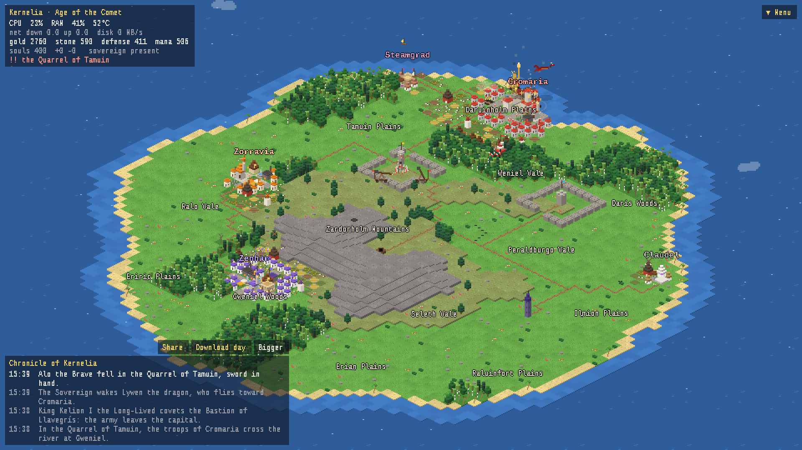
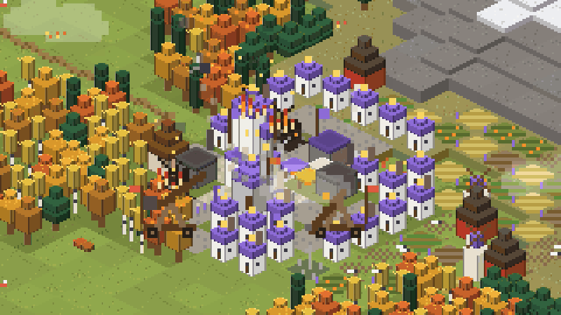
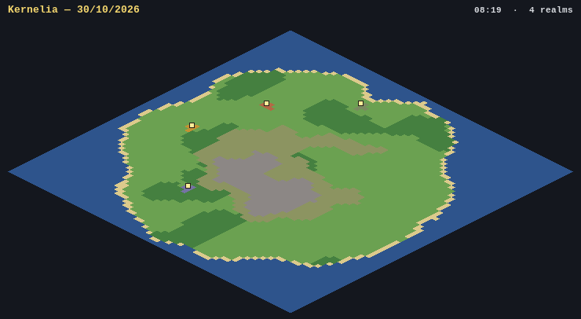
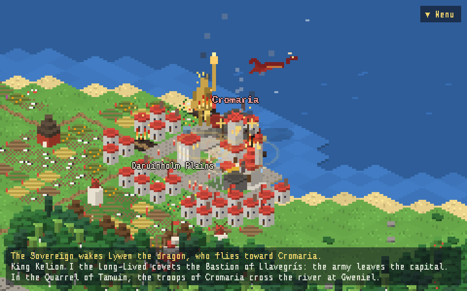
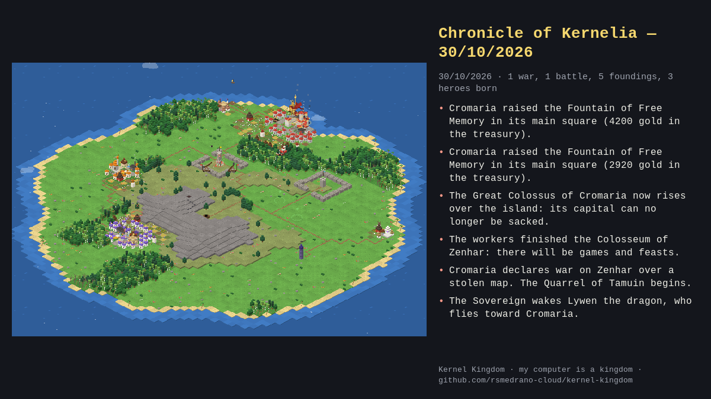
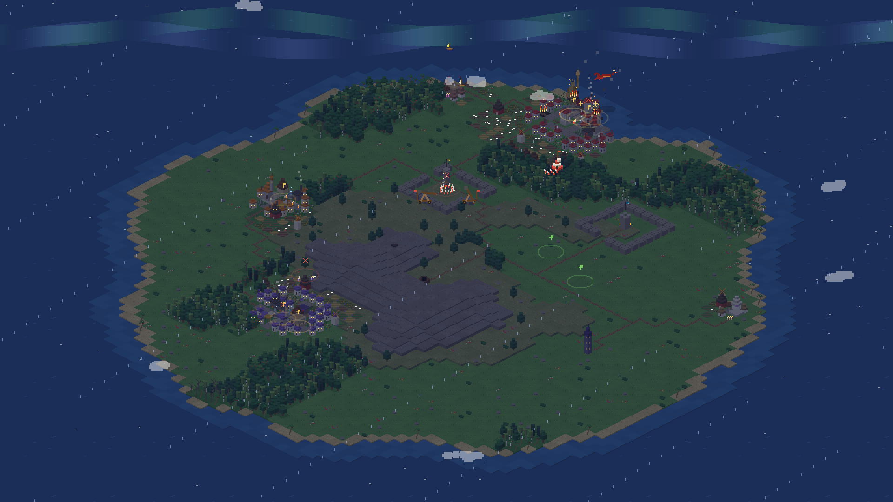
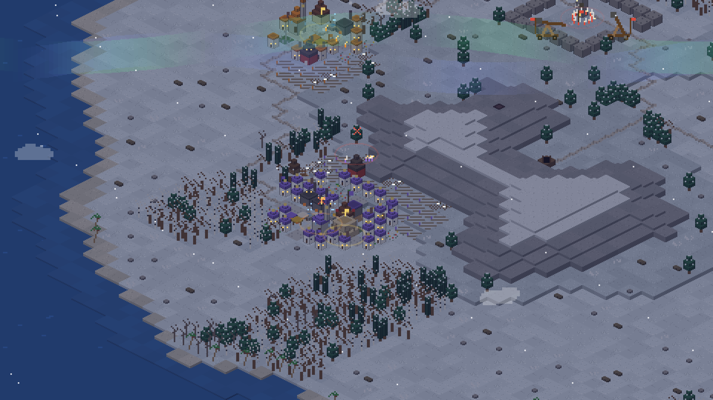
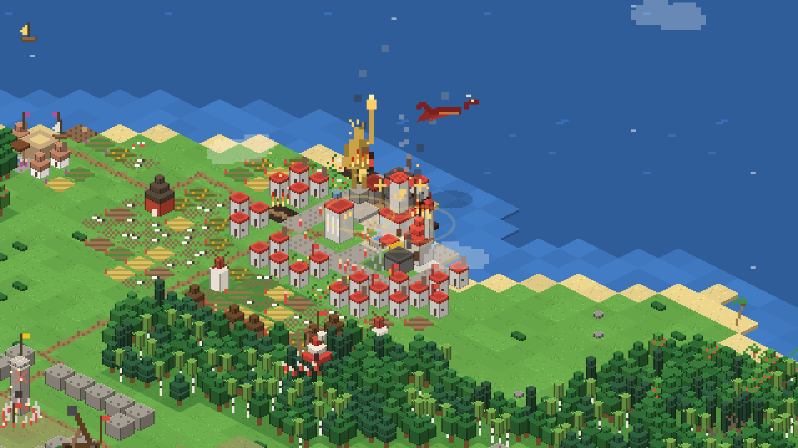

A pixel-art isometric live wallpaper where your computer is a kingdom. Browsers become empires, containers become citadels, compiling summons thunderstorms — and a procedural chronicle tells the story.

curl -fsSL https://raw.githubusercontent.com/rsmedrano-cloud/kernel-kingdom/main/install.sh | bashLinux · wallpaper on Wayland (COSMIC, Sway, Hyprland, KDE…) · window mode anywhere, X11 and 32-bit included · English & Español · MIT
| Your machine | The kingdom |
|---|---|
| Browsers & Electron apps | Empires that claim land with RAM and grow denser with child processes — with real town planning: squares, streets, markets, temples, barracks, farms and docks. |
| Heavy apps | Hamlets with a landmark: an oracle, a smithy, an arena… |
| Containers, databases, daemons | Citadels whose walls grow with uptime and whose shields stop lightning. |
| CPU spikes, RAM, swap, temperature | Thunderstorms, volcanic eruptions, fog, plague and wildfires. |
| Network & disk | Merchant fleets, caravans and busy mines. |
| SSH sessions, reboots, kernel updates | Foreign envoys, new ages, new gods. |
| Process restarts | Dynasties: monarchs die, abdicate or get overthrown. |
The banner of Cromaria is raised. Queen Lorora I claims the land. A thunderstorm, summoned by the smiths of rustc, falls upon Fedorovia (CPU 97%). The War of the Orphaned Tabs breaks out: Cromaria invades Zenhar. In the temple of Zorravia they worship Fireix, Mother of Threads. A ship flying the flag of Erigarth docks: Aldor comes ashore. Loruin the Wise wrote a treatise on the art of freeing memory. The old god 7.2.8 has fallen; now they pray to Linux 7.2.13.
Realms migrate as their heading turns during the day, neighbors go to war out of ambition, conquered land is razed and sacked capitals move elsewhere. In the evening your island looks different than it did in the morning.
Every day ends up as a story you can read or listen to: a full example day (en castellano).







Villagers have jobs and walk the streets to work. Sprites are re-rendered at double resolution when you zoom.
Strike anywhere. 5 mana.
Puts out fires and lava, fields turn green.
Gold for a realm, heroes for a party.
Shape the island yourself.
Expeditions head into the wild; big realms march on fortresses.
Colossus, Colosseum, Observatory, Hanging Gardens — each with an effect.
Flies in from the sea and sets a region ablaze.
Fortify a capital or stop a war.
The wallpaper is for watching; open kernel-kingdom window to act. Building takes people and time:
workers walk from the nearest city to raise your lighthouse. Resources come from your system: territory makes gold,
disk activity makes stone, editors and your presence make mana, fortresses make defense.
About 6 FPS when nothing is happening.
0% CPU while windows cover the wallpaper (COSMIC).
~3% of one core for the window at rest; the daemon under 1%.